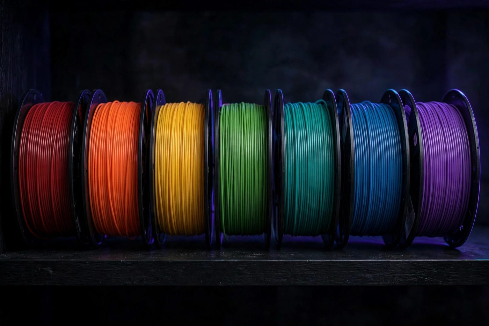

Filament types explained: PLA, PETG, ABS and friends

Filament is the plastic spaghetti your printer melts and draws with. There are dozens of types, but four cover the vast majority of home printing. Learn these, print with each, and you'll have the right answer to "what should I use for this?" almost every time.
PLA: the beginner's filament
PLA (polylactic acid) is where everyone starts, and for good reason. It prints at modest temperatures, sticks to the bed easily, barely warps, and comes in every color imaginable. Finished PLA parts are rigid with a pleasant matte or satin surface. It's the right choice for decorative objects, organizers, toys, prototypes, and anything that lives indoors at room temperature.
The catches: PLA softens in heat — a PLA part left in a hot car will sag and deform — and it's brittle compared to other plastics. Thin PLA tabs and clips snap rather than flex. Don't use it for parts that sit in sunlight all day, near engines, or anywhere that gets genuinely hot. But for learning and for most indoor projects, nothing beats it.
PETG: the step up for functional parts
PETG is the workhorse of functional printing: brackets, hooks, holders, parts that take some stress or live outside. It's tougher and more heat-tolerant than PLA, and it resists moisture and sunlight far better. If PLA is the hobbyist plastic, PETG is the utility plastic.
It asks more of you in return. PETG prints hotter, likes to string (thin wisps between parts of a print), and bonds to itself almost too well — supports can be stubborn to remove. It's still very learnable as a second filament, and it's the one to reach for when a part needs to survive real use: a garden tool mount, a replacement clip that flexes, a phone holder that bakes in a sunny car.
ABS and ASA: strong, heat-proof, and demanding
ABS is the classic engineering plastic — the stuff of car dashboards and LEGO bricks. ASA is its weather-resistant cousin, essentially ABS that survives the outdoors. Both handle heat and abuse far better than PLA or PETG, and both are what you want for under-hood parts, outdoor enclosures, and anything structural in a warm environment.
The price is hassle. ABS and ASA warp aggressively as they cool, which means they want an enclosed printer and a warm, draft-free environment. More importantly for a home printer, they release unpleasant fumes when melted. Print these only in a well-ventilated space (or with the enclosure vented away from you), and don't make them your daily driver until you've got some experience. Most beginners can wait a year before touching these.
TPU: the flexible one
TPU is rubbery — phone cases, cable grommets, vibration-damping feet, squishy toys. It prints by being squeezed through the nozzle rather than pushed, which makes it slow and a little fussy: print speeds are low, and stringing is common. It's also the filament most sensitive to moisture, and a damp spool of TPU prints terribly. Try it for a specific project that needs flex, not as a general-purpose material.
The supporting cast
A few others you'll meet: PLA+ / tough PLA blends that trade a little of PLA's easiness for impact resistance — a nice middle ground before PETG. Wood- or marble-filled PLA (PLA with additives) that print like PLA but look and feel unusual; they're abrasive, so expect nozzle wear. And PVA/BVOH water-soluble filaments used as supports for complex shapes — a specialist tool, not a daily filament.
Storage matters more than you think
Filament absorbs moisture from the air, and wet filament prints badly: popping sounds, rough surfaces, weak layers. PLA tolerates humidity best; PETG, TPU, and nylon-type filaments are thirsty. Keep spools sealed in bags with desiccant when you're not using them, and a spool that suddenly prints poorly after sitting out for weeks is probably damp, not bad. Drying it in a filament dryer or a low oven often restores it completely.
The sane order to try them
Start with PLA and stay there until your prints are consistently good — that's your control group. Move to PETG when you need tougher parts. Add PLA+ blends or TPU for specific projects. Save ABS/ASA for when you have an enclosure, good ventilation, and a part that genuinely needs their properties. Master each one in turn and you'll never be guessing.